About Australia
Australia is a developed country and the largest country in Oceania. It is known for its multicultural society, high quality of life, modern cities, beaches, and unique wildlife.
Capital
Canberra
Language
English
Currency
$ AUD
Time Zone
UTC +8 to +10
Important Festivals
See all →Australia Day
National day with community events, fireworks, and celebrations of Australian culture.
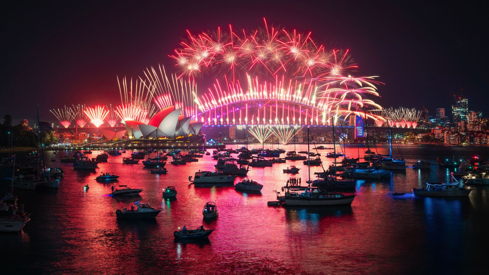
Sydney New Year's Eve
Famous fireworks celebration around Sydney Harbour.
Famous & typical Food
See all →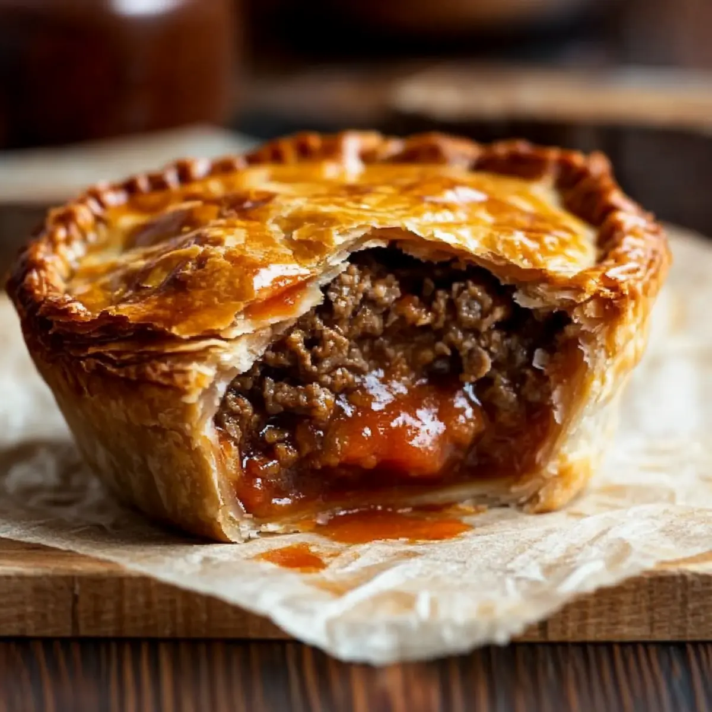
Meat Pie
Savory pie with meat and gravy.
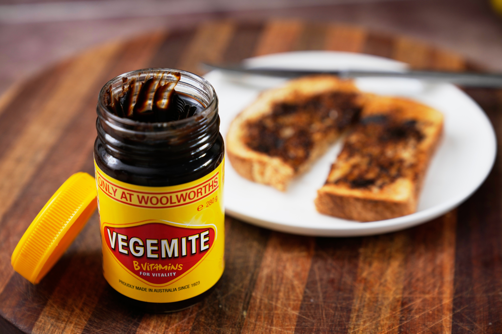
Vegemite
Salty spread popular in Australia.
Top landmarks & cities
See all →Sydney Opera House
Famous performing arts centre.

Great Barrier Reef
World's largest coral reef system.
Thinking of moving to Australia?
Australia has a skilled migration system and offers visas for tourists, students, workers, and families. Many nationalities need an eVisitor or Electronic Travel Authority for visa free entry. The official Australian immigration agency is the Department of Home Affairs.
Visit Department of Home Affairs ↗Events & Festivals
Australia has many national celebrations, cultural festivals, music events, and sporting events throughout the year.
All festivals
Australia Day
26th JanurayAustralia's national day celebrates the country's rich history and culture. Expect lively outdoor community events, backyard barbecues, citizenship ceremonies, and stunning evening fireworks displays in major cities.
Sydney New Year's Eve
31st DecemberThis is one of the world's most famous celebrations. Millions gather around Sydney Harbour to enjoy a breathtaking fireworks display that launches from the Harbour Bridge and Opera House.
Melbourne Cup
First Tuesday in NovemberKnown as "the race that stops the nation," this top horse racing event brings the entire country to a standstill. It is well-known for high fashion, elaborate hats, and lively carnival celebrations.
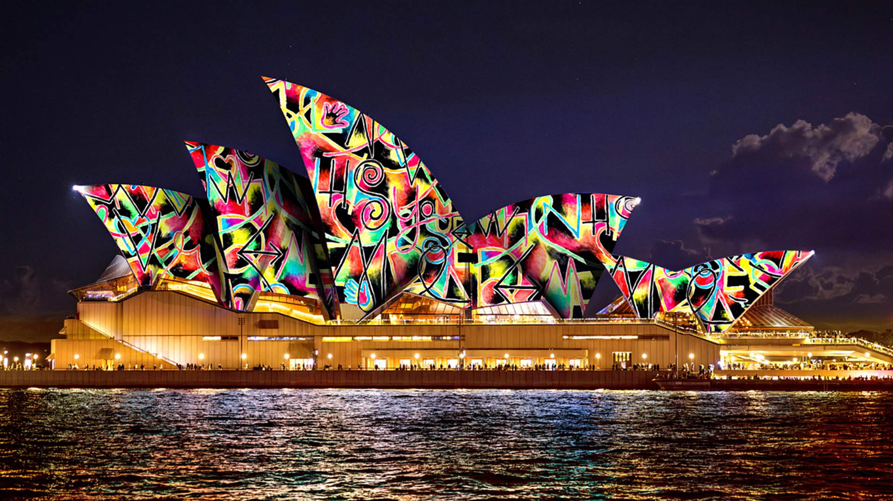
Vivid Sydney
May - JuneThis festival turns Sydney into an outdoor gallery. The city's iconic buildings, including the Opera House, are lit up with stunning light projections along with live music and innovative ideas.
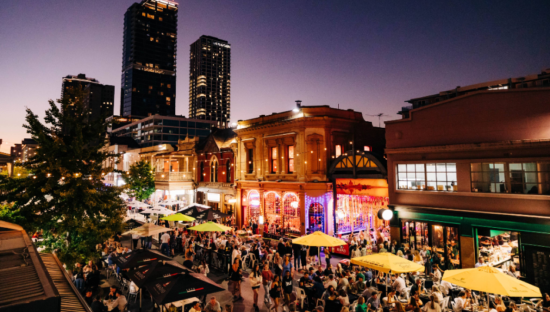
Adelaide Fringe
February - MarchThis is the largest arts festival in the Southern Hemisphere. For a month, Adelaide bursts with thousands of artists performing comedy, theater, circus, and live music in theaters, parks, and temporary venues.
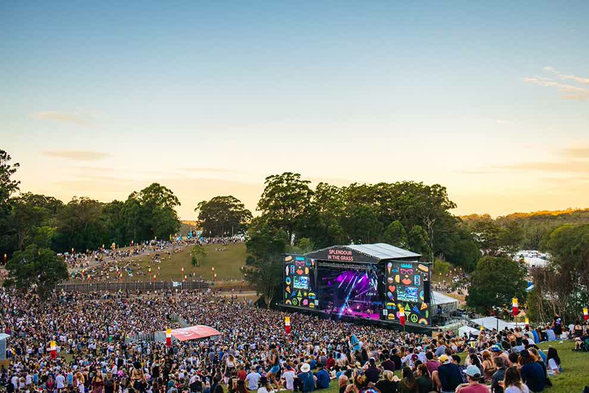
Splendour in the Grass
JulyThis is Australia's biggest winter music festival. Held near Byron Bay, this major event attracts large crowds for a weekend of camping, art installations, and performances by well-known international and local indie-rock acts.
Culture
Australia has a multicultural culture influenced by Indigenous traditions, British history, and immigration from many countries.
Values & Customs
Built on the idea of a "fair go," Australians value equality, humility, and fairness. They enjoy a friendly, relaxed lifestyle that emphasizes a healthy work-life balance, spending time with family, and enjoying the outdoors.
Equality Fairness Friendly
Art & Traditions
With a rich heritage, Australia honors the world's oldest continuous living culture through vibrant Aboriginal storytelling and dot painting. Modern traditions focus on world-class film, live music, and a huge culture dedicated to sports.
Aboriginal culture Music Sports
Religion
While Christianity has historically been the largest religion, modern Australia is very secular and multicultural. People from various backgrounds practice their faiths freely, resulting in a diverse landscape of mosques, temples, synagogues, and churches throughout the country.
Christianity Multicultural
Etiquette
Interactions are informal, friendly, and based on first names. Polite gestures such as saying "please" and "thank you" are important. Tipping is not required since hospitality workers earn high minimum wages, but rounding up for excellent service is appreciated.
Politeness Respect Relaxed
Food
Australian food includes seafood, meat, desserts, and dishes influenced by British and Asian cultures.
Famous Dishes
Meat Pie
The ultimate handheld comfort food. It features a small, flaky pastry crust filled with minced beef and rich gravy. Australians consume millions of these at sporting events, often topped with a generous squirt of tomato sauce.
Vegemite
A thick, black, highly salty spread made from yeast extract. The key is to use it sparingly; spread a paper-thin layer on hot, heavily buttered toast for a savory, umami flavor explosion.
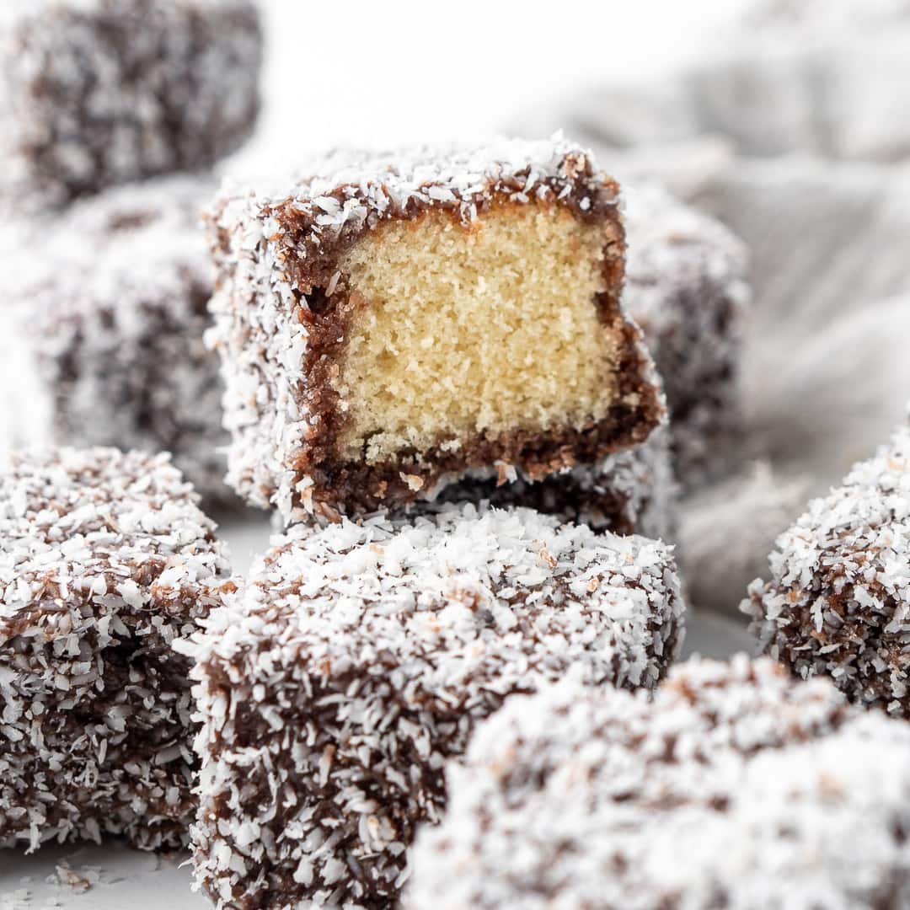
Lamington
Australia's national cake. These bite-sized squares of fluffy sponge cake are dipped in sweet chocolate icing and rolled in shredded coconut. They are sweet, light, and make a great companion for an afternoon coffee.
Pavlova
A stunning dessert with a crisp meringue shell and a soft, marshmallowy center. It is usually topped with fresh whipped cream and tart fruits like passionfruit and berries to balance the sweetness.
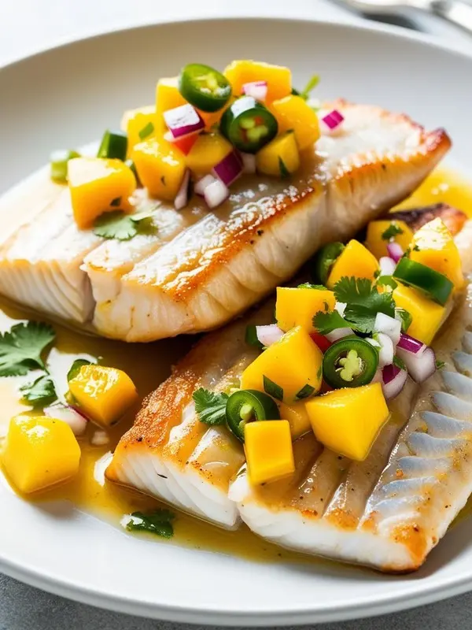
Barramundi
A famous native Australian white fish with a mild, sweet taste and firm texture. It is popular because it doesn't have a strong "fishy" flavor. Whether seared to perfection at a fine restaurant or fried at a beachside fish-and-chip shop, it is always a hit.
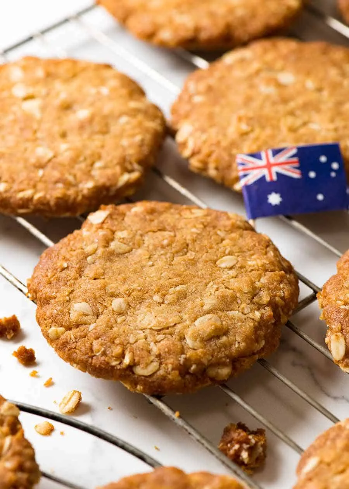
ANZAC Biscuits
Crunchy, chewy cookies made from oats, coconut, and golden syrup. They have rich history; women baked them during World War I to send to soldiers overseas, as the ingredients did not spoil easily.
Flat White
Australia's signature coffee. It combines a strong shot of espresso with velvety, finely steamed milk. With less foam than a latte, it offers a smoother texture that enhances the rich coffee flavor.
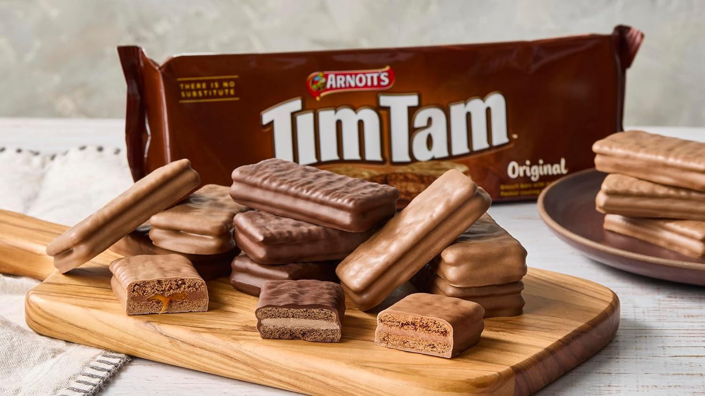
Tim Tam
A beloved chocolate biscuit made of two malted layers with creamy chocolate filling, all coated in smooth milk chocolate. You can bite off opposite corners and use it as a straw for hot coffee to enjoy the "Tim Tam Slam!"
Weather
Australia has a mostly warm climate, but weather changes depending on the region. The north is tropical, while the south has milder seasons. Climate type: Tropical in the north, temperate in the south, dry inland .
Montly overview
To be mindful of
Best time to visit
March - MaySeptember - NovemberThe continent experiences the most pleasant, mild weather during these times.
Careful
December - FebruaryCan be very hot, especially in the north and inland areas.
Landmarks
Australia is famous for modern cities, beaches, national parks, and natural wonders.
Sydney Opera House
Sydney, New South WalesFamous performing arts centre.
Great Barrier Reef
QueenslandWorld's largest coral reef system.
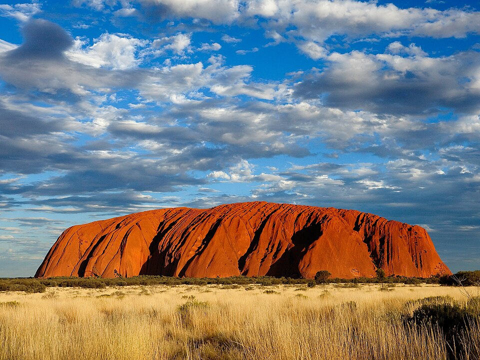
Uluru
Northern TerritorySacred red rock formation.
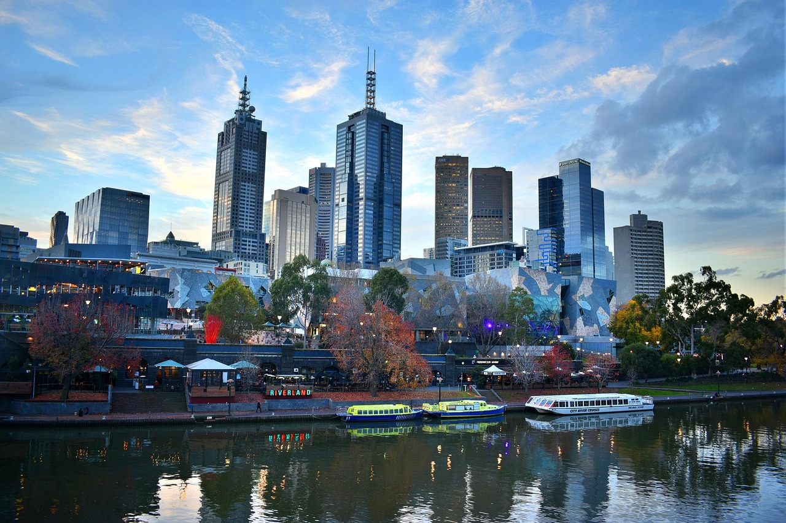
Melbourne
VictoriaCultural city known for food, art, and sport.

Gold Coast
QueenslandFamous for beaches and theme parks.
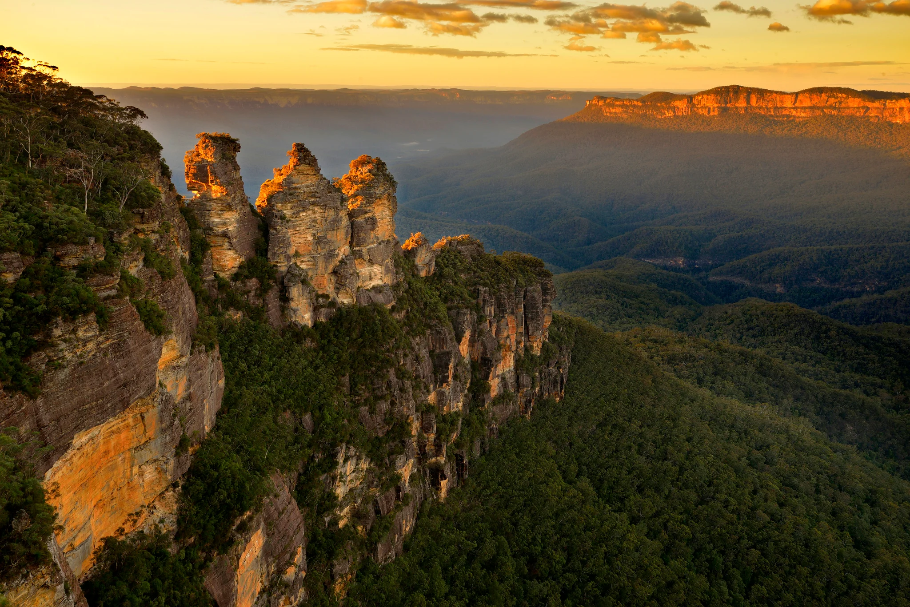
Blue Mountains
New South WalesNational Park with mountains, forests, and views.
Immigration
Australia has a skilled migration system and offers visas for tourists, students, workers, and families.
Department of Home Affairs
Many nationalities need an eVisitor or Electronic Travel Authority for visa free entry. The official Australian immigration agency is the Department of Home Affairs.
Official Australian immigration website ↗Common visa types
⚠️Always check with the corresponding official agency. This table might not be up to date and different rules apply to different origin countries.
| Visa type | Duration | Processing time | Notes |
|---|---|---|---|
| Tourist | 3, 6 or 12 months | Few days to weeks | |
| Work | Up to 4 years | 2-6 months | Skill or employer required |
| Student | Duration of study | 2-6 weeks | |
| Spouse/Family | Depends | 1-3 months | |
| Residency | - | 6-24 months | Points test or sponsorship |
| Digital nomad | - | - | No official visa |